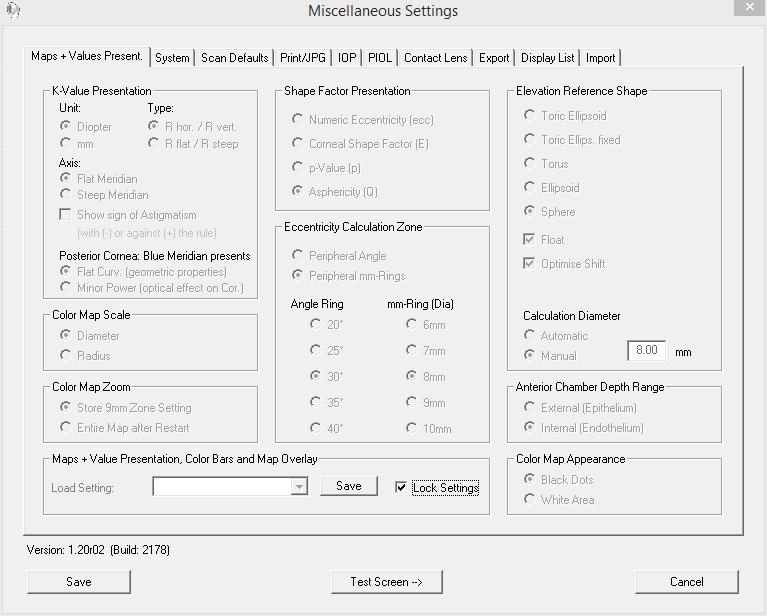

In order to function correctly the neural network needs to receive the correct variables from the Pentacam software, and therefore it is important that this software be configured correctly. If some desired variables are not present then an error message will be displayed (“Fields [X, Y] not found in file F”) and the application will terminate. If this happens you should go to the menu “Settings → Miscellaneous Settings” on the OCULUS - PENTACAM Overview screen and check that the values in the Maps + Values Present tab are as shown below.
In order to change the settings you may need to uncheck the “Lock Settings”
checkbox. After making your changes close the Pentacam application, go into the C:\Pentacam directory
and remove all the files with a .CSV extension; then restart the PC.
.